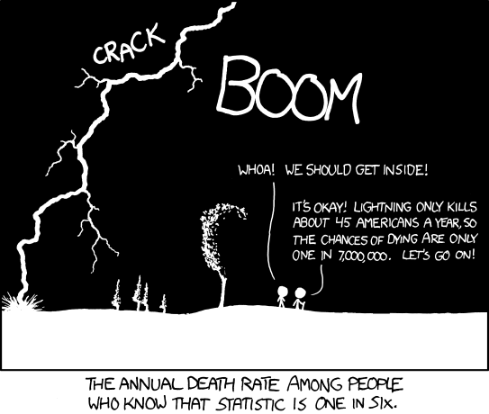

Lab 1: Getting Started
Computer Lab 1
Introduction
Welcome to the online lab. The labs for this class will help you gain a better understanding of the concepts and methods taught in lecture as well as giving you experience using modern statistical software to apply the techniques you learn. The labs are meant to be self-guided. You can do the lab at your own pace as long as you finish the corresponding eLC lab quiz by the due date.
Lab 1 has two purposes.
First, is to give you a basic overview of how the online labs work. I will describe the different parts of the lab, how to complete the lab, how to get credit for doing the lab, and how you can get help if you need it.
Second, providing an introduction to what data and R are (despite all the “arrrs” pirates are not involved).
THE LABS ARE FOR YOU TO LEARN. NOT TO TEST YOUR KNOWLEDGE.
Lab Sections
The labs are broken up into five general section types.
Description of each section type:
Introduction: The introduction for each lab provides a very brief overview of the topics to be covered. The purpose of the introduction is to let you know which topics will be covered so you can get the corresponding class notes or lecture slides ready.
General Topic: Each lab will have any number of topics (some labs only have a couple, others have a bunch). All of the topics have descriptive names. The name of each topic is shown in the upper left-hand corner of the screen. The topic you are currently in will be shaded so you can see where you are in the lab (you are in the “Lab Sections” topic).
Exercise: In the labs, an exercise can be a topic or a section inside a topic if they are small. There are two basic exercise types. The first is an interactive exercise where you will select options from drop-down menus, slider bars, or check-boxes to explore concepts. The second type of exercise requires you to write or complete some necessary R coding to generate an output or result. I will show you examples of both.
Quiz: Quizzes will always be a section within a topic, but not all of the topics have a quiz. The quizzes are used to make sure you understand what you need to do for an exercise and to see if you understand the output/results that you made. The quizzes are for learning purposes only, and you can take them as many times as you want. If you get the question wrong, click the retry button. You have to record your answers to all of the quiz questions. Each question in the lab corresponds to a question on the eLC quiz. To get credit for doing the lab have to take the eLC quiz for that lab. I will stress that if all you do is click through the lab to get the answers to the quiz, you are only hurting yourself.
Summary: The summary for each lab will summarize what you did and the topics covered by the lab.
Example Exercises and Quiz
There are two general exercise types, interactive or coding. Regardless of the exercise type, make sure you read the instructions. The following sections are some examples of the different types and a quiz based on the results of exercise 3.
Exercise 1: Interactive Exercise
Interactive exercises do not require any coding. You can do whatever you want, but if there are questions related to the interactive exercises, you use the options to answer them.
Below is an interactive histogram of eruption duration of Old Faithful a famous geyser in Yellow Stone national park. Want to see an eruption? Check out the live stream. This example is from the R studio shiny gallery follow the link if you want to see more interactive figures.
Helpful hint: Hold control when clicking links and they will open in a new tab.
Instructions: Use the available options and see what happens to the plot as you change them. THIS IS JUST AN EXAMPLE DO NOT WORRY IF YOU DON’T UNDERSTAND EVERYTHING
Exercise 2: Coding Exercise (Complete Code or Fill in the Blank)
This is a coding exercise where some of the code is already provided. Below you see a box with some writing in it. This box is called a “chunk”. For these exercises, you need to read the instructions to understand what to do. The instructions will make it clear if you need to do anything to the code to make it work, and what you will do with the results.
In some cases, you don’t have to do anything with the code and will click the “run code” button at the top of the chunk. In other cases, you will have to complete the code in the chunk. If you need to “fill in the blank,” review the code, find the missing part, and add the required code. If you don’t “fill in the blank,” the code will not work or produce the wrong results.
If you mess up the code or delete something that you did not mean to, click the “Start Over” button for that chunk. This will reset the code in the chunk
Note or comments in the chunks are there to help you. A “#” precedes each note or comment in the chunk.
The data set we are using for the example is called “old_faithful.” It has three variables “x”, “eruptions”, and “waiting”. The “x” variable is the eruption number. The “eruptions” variable is the duration of eruptions in minutes, and the “waiting” variable it the duration of time between eruptions in minutes.
Instructions: The str() function tells you the structure of the data set and the variables’ type. The code below is complete. Click the “Run Code” button to generate the results. See if you can understand the information in the results.
Instructions: The summary() function creates a basic numeric summary of variables in the data set. The code below needs to be finished. Review the R code and fill in the blank before running the code. See if you can understand the information in the results.
Exercise 3: Coding Exercise (Writing Your Own Code)
This is an exercise with an empty code chunk. You will use the instructions or previous examples to write the code and then click the “Run Code” button to generate the results.
Instructions: Write the R code required to create a summary of the “old_faithful” data set. If you have an error in your code, a red box with an “x” will appear. Use the results to answer the quiz questions below.
Quiz: Questions 1-2
Instructions: Use the results above to answer the questions below. If you get the question wrong, click the “Try Again” button. Don’t forget to write your answers down so that you can answer the questions on the eLC quiz for this lab.Question 1
What is the longest duration of an Old Faith eruption?
Question 2
What is the mean duration of an Old Faith eruption?
How to Complete Lab Sections
For the introduction and other topics that only have text in them, you only have to read it and then click the “Next Topic” button. You will notice that a black bar appears next to the topic name.
For each of the general topic sections, you will read about the topic, and if included, you will do the exercises and complete any quizzes. When you are finished, click “Next Topic”. If you missed an exercise or quiz question the bar next to the topic name will not be complete.
Once you have reviewed the lab summary, you are done with the lab. Make sure all the black bars next to the topic names are complete and then take the eLC quiz for the lab.
Getting Credit for Doing the Lab
Your lab grade is based on the eLC quiz for that lab. If you do not do the eLC quiz by the due date, you will get a 0 for that lab.
The quiz questions in the lab correspond entirely to the eLC questions. The first question in the lab is the same as Question 1 on the eLC quiz for that lab.
Getting Help
If you wait until the day the quiz is due to ask for help, it may not come fast enough.
If you are having technical difficulties, please post your issues on the “Technical Difficulty” discussion board. The discussion board can be found in the “BIOS2010 Lab Info” course on eLC. If you do not have not have access by the end of add-drop please email your instructor. Be sure to include your myID.
If you have a question about an exercise, first, re-read the instructions carefully and try again. Second, check the lab discussion board “Content Questions” on eLC and see if another student has asked the same question (maybe it has already been answered). If no one has asked a question related to your question, you can post your question there, and a TA or Instructor will reply (you need to be as specific as possible). If you still need help, you can chat with a TA during the times posted on the “BIOS2010 Lab Info” eLC page.
Note: During summer courses the “BIOS 2010 Lab Info” eLC page is not used. Instead, the discussion boards are available on the main eLC page for your summer course.
Introduction To Data and R
Data is a very general term, and it can take many different forms. In the case of biostatistics, the data we work with is related to living organisms. The simplest definition of data is a systematic recording of information related to observations. Biostatisticians turn the information in data into knowledge.
“Remember kids, the only difference between screwing around and science is writing it down” Adam Savage.
Biostatisticians, and anyone working with data, rely on statistical software. In the lab, you will use a statistical programming language called R (Want to know more? check out R for Data Science). For R, and many other statistics software, the data has to be organized such that each row corresponds to a single observation, and each column is a single variable. The data we have is already correctly formatted so we can get straight to work. Don’t worry if you don’t have any coding experience; the labs will guide you and TA’s will be available to answer questions. The answer to a lot of R related questions can be found with a quick Google search. There are also a number of free introduction courses for using R. One of the nicer ones is the free introduction to R offered by DataCamp.
R and the corresponding development software R studio is free, and both have a great user community, so if you ever need to do some data analysis for another class, it is a great place to start ( Down Load R, Down Load Rstudio).
Exercise 4: Data Structure
In this exercise, you will explore and manipulate data from individuals admitted to the ER complaining of chest pain that may be the result of heart failure. The data set name is “heart_failure”.
The data is displayed below, and one of the first things you will notice is that it is mostly numeric, and only a few of the “words” make sense. Some of the numeric values make sense. For example, we usually think of age as a number, but for sex, we typically think female/male, not 0/1. Using numbers to represent values that we would typically use words for is a popular way to record data, but in either case, without the proper documentation, this data is not useful. You could assume that age was recorded in years, but it may be months. A data dictionary is required to decode the data, and I have added it below.
The way the data organized is critical. There are two essential features of this data that are worth pointing out. First, each row corresponds to a single observation (i.e., one patient). Second, each column is a single variable.
Instructions: Take some time to explore the data using the drop-down menus and arrows next to the variable names. When you select a value from the drop-down menu, a new data subset is created that only includes the observations (rows) with that value. The arrows next to the variable name will sort the whole data set by the values of that variable (increasing or decreasing). After you have explored the data, use the menus and arrows to answer the quiz questions.
Data Dictionary
age: age in years
sex: (1 = male; 0 = female)
trestbps: resting blood pressure (in mm Hg on admission to the hospital)
chol: serum cholesterol in mg/dl
fbs: (fasting blood sugar > 120 mg/dl) (1 = true; 0 = false)
thalach: maximum heart rate achieved
exang: exercise induced angina (1 = yes; 0 = no)
oldpeak: ST depression induced by exercise relative to rest
Quiz: Questions 3-6
Don’t forget to write your answers down so that you can answer the questions on the eLC quiz for this lab.Question 3
What is the age of the oldest male included in the data?
Question 4
What is the highest cholesterol value in the data?
Question 5
How many women have a fasting blood sugar > 120 mg/dl?
Question 6
How many patients are included in the data set?
Data Summaries
Data alone is not useful. Careful analysis of data by an investigator is required. The most basic analyses of data are the calculation and reporting of appropriate summaries. Data summaries can be either numerical (means, modes, medians, etc.) or visual (bar charts, histograms, etc.) and are simple to generate using R. The summaries you create are the first step to gain insight into the patients included in the data set. Using the data from the previous section, we will use R-coding to generate summaries of the age and chol (cholesterol) variables.
Generating Summaries with R
The first step is getting the data into R and cleaning it up. I have already done these steps for you (Your Welcome!).
The next step is generating some basic summaries of the included variables.
Exercise 4: Numeric Summary of Age
Instructions:The box below has a single line of code and a bunch of comments. Once you are ready to run the code, click the “Run Code” button. The “output” or “results” will show up in a box below. Since this is probably your first time, I have provided the code with an explanation of what’s happening.
Exercise 5: Visual Summary of Age
Instructions: The code is ready to go all you have to do is click run.
Exercise 6: Write your own code for CHOL
Instructions: Using the code in the chunks above as an example fill in the code below to generate the same summaries for “chol” variable. The code is not complete, so if you click the run code button without filling in the blanks, it will generate an “error message” and no results.
Quiz: Questions 7-10
Don’t forget to write your answers down so that you can answer the questions on the eLC quiz for this lab.Question 7
What is the mean age of the patients?
Question 8
What is the bin width for the age histogram?
Question 9
Which age group has the most patients based on the histogram?
Question 10
What is the lowest cholesterol value recorded for a patient?
Summary
In this lab, you completed 6 exercises and answered 10 quiz questions.
The lab covered:
- How to navigate and complete the online labs
- A basic understanding of data and R
Great job! You are done with the first lab. Don’t forget to record your answers and take the eLC quiz to get credit
